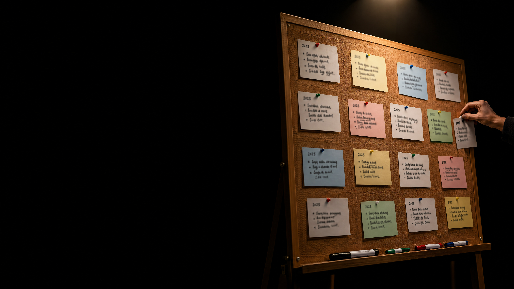

a brief history of AI
when didAI begin?
image: ai-generated (gpt-image-2.5-flare)

what do you know
about the history
of AI?
about the history
of AI?
one card = one milestone
the year, if you know it
block letters, big
pin it on the board
10 minutes · in pairs · there are no wrong cards
image: ai-generated (gpt-image-2.5-flare)
before you
what your peers knew
an earlier group wrote a report together: “a brief history of artificial intelligence”
now
let's do it properly.
every milestone checked
every source read
every fact written down
let an AI agent help
do you know who this is?
let's ask for help.
two inputs, a photo and a text file · one task
step 1 · research
We are a group of students learning about artificial intelligence.
Help us build a knowledge base on the history of AI.
Inputs:
- a photo of our pinboard: milestones our group knows
- milestones.md: AI milestones that an earlier group collected
Tasks:
- find reliable sources for every milestone, and research further
important milestones yourself
- download every source and save it
- read each source and extract the key facts:
what? who? where? when? — and so what?
- store them in a structured knowledge base as Markdown, one file per
milestone, with its source and its origin: the earlier group, our group,
or agent
- write all errors you find in milestones.md to an Excel list
- pinboard cards you cannot verify go to a list "still to check"
First read everything and show me your plan. Wait for my go.
libraries are boring,
so let's build
something
interactive.
so let's build
something
interactive.
image: ai-generated (gpt-image-2.5-flare)
step 2 · build
Now build a visually compelling, interactive web app "A Brief History
of AI" for our group. It guides visitors through the history of AI
on a timeline.
- use only the knowledge base — no new facts
- every entry shows what, who, where, when and so what,
and links to its source
- show where each entry came from: the earlier group, our group, agent
- a static site (HTML, CSS, JavaScript, no build step), in English
- must work on phones and on the projector; do not include the photo
Show me your plan first. Wait for my go.
while the agent builds
video on youtube
test it
trust, but check.
which errors did the agent find in the earlier group's list?
which of our cards made it, which are “still to check”?
what did the agent add on its own?
click a source: does it say what the app says?

time for
assessment.
assessment.
image: ai-generated (gpt-image-2.5-flare)
step 3 · quiz
Add a quiz to the app, so visitors can test what they learned
about the history of AI.
- 50 interesting questions, based only on the knowledge base
- 4 answer options per question, exactly one of them correct
- the wrong options must be plausible, not silly
- after each answer: right or wrong, the correct answer,
and a link to the matching entry on the timeline
- questions in random order, a score at the end
- same design as the timeline; must work on phones
Show me three example questions first. Wait for my go.
bonus · guided mode
Add a guided mode to the app: a narrator tells the history of AI,
and the app follows along.
- write an engaging story from the milestones, based only on the knowledge base
- choose a fitting narrator voice from the OpenAI text-to-speech API;
the API key is in the environment variable OPENAI_API_KEY
- create the audio in advance — the app itself never calls the API
- while the narrator speaks, the app opens the matching milestone
on the timeline by itself, no clicks needed
- the user can pause, skip and leave the guided mode at any time
- say in the app that the voice is AI-generated
- never write the API key into the app or into any file
Show me the outline of the story and the voice you chose first.
Wait for my go.
publish
Create a public GitHub repository "brief-history-of-ai" and publish
the app with GitHub Pages. Give me the URL.
Publish only the app, its audio and the knowledge base — not the
downloaded sources, not the Excel list, not the photo.
Then make a QR code for the URL and open it in the browser,
so everybody in the room can scan it.
it's live
when we started, this page did not exist.
from a photo to a website
the agent did the work, while people set the goal, approved each plan and checked the result.
what the agent did, and what's behind it
read a photo of handwriting
→
how computers see images
wrote a plan
→
reasoning
generated text and code
→
how LLMs & neural networks work
knew how to build a web app
→
how an LLM is trained
used tools: files, browser, web
→
rules vs. learning · tool use
got something wrong
→
hallucination
checked facts against sources
→
trust and verification
split the work among sub-agents
→
multi-agent systems
published to the web on its own
→
autonomy, safety, responsibility
how do these systems work?
what's the difference between ChatGPT and Claude Code?
how does a language model represent text, and meaning?
why does it give a different answer every time?
how much can it keep in mind at once?
can I run an AI on my own laptop?
why do the models keep getting better?
what does it mean for us?
where is AI already at work in our domains?
the machine predicts, who decides?
how should we use AI in our studies and in research?
how much energy does an answer cost?
which jobs will change?
what does AI mean for the economy?
whose data is it?
how do we regulate AI, and where is all this going?
your turn
which of these questions
do you most want answered?
do you most want answered?
write it on a card and pin it next to the timeline.
the next milestone
is still blank.
is still blank.
image: ai-generated (gpt-image-2.5-flare)